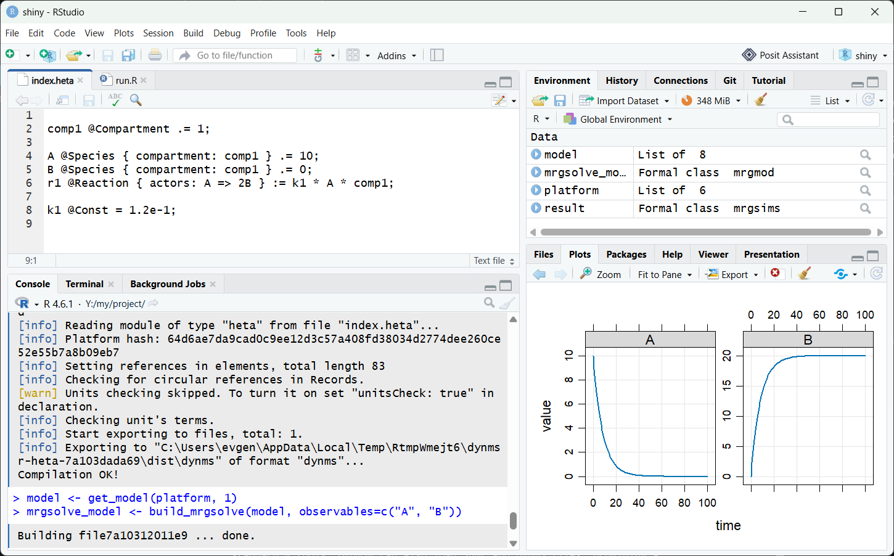
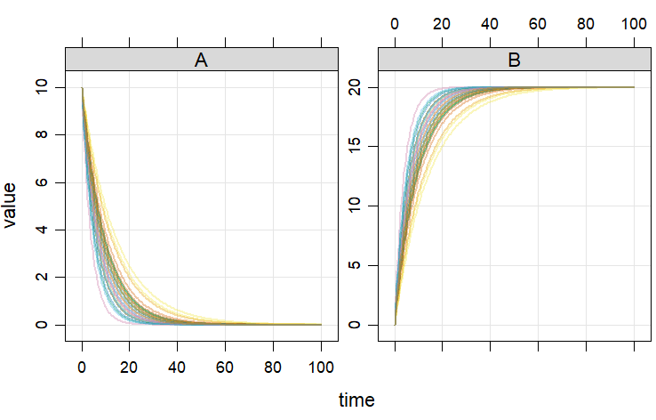

Evgeny Metelkin
2026-11-10

The Heta project provides a language and toolchain for building complex mechanistic models. Heta models can be split into reusable modules, checked together, and exported to different formats-useful for large QSP models that should not be tied to one simulation environment.
With DynMSR, Heta models can now be loaded directly into R. The Heta Compiler package turns a project into a model ready for simulation. DynMSR is available from CRAN.
Simulation is handled by mrgsolve, an established R package for ODE-based models in pharmacometrics and drug development. It combines a compiled simulation engine with R tools for parameter exploration and population simulation.
install.packages(c("DynMSR", "mrgsolve"))Loading Heta projects also requires Heta Compiler. Follow the installation guide for your operating system, or download an installer from the latest release.
After installation, DynMSR can check that the heta command is available and that its version is supported:
library(DynMSR)
heta_check()Create a directory and add a plain-text file named index.heta in RStudio:
comp1 @Compartment .= 1;
A @Species { compartment: comp1 } .= 10;
B @Species { compartment: comp1 } .= 0;
r1 @Reaction { actors: A => 2B } := k1 * A * comp1;
k1 @Const = 1.2e-1;This model converts one unit of A into two units of B at a rate determined by A and k1.
Run the R code from the directory containing index.heta (or replace "." with its path):
library(DynMSR)
library(mrgsolve)
platform <- heta_load(".")
model <- get_model(platform, 1)
mrgsolve_model <- build_mrgsolve(model, observables = c("A", "B"))
result <- mrgsim(mrgsolve_model, end = 100, delta = 1)
plot(result, A + B ~ time)build_mrgsolve() returns a regular mrgsolve model, so the standard mrgsolve API remains available.
We can also use the model for a simple population simulation. Here, k1 varies randomly between virtual individuals, producing a family of possible trajectories:
idata <- expand.idata(k1 = 0.12 * exp(rnorm(30, 0, 0.35)))
mrgsim(mrgsolve_model, idata = idata, end = 100, delta = 0.5) |>
plot(A + B ~ time, lwd = 2, alpha = 0.35)
Beyond Heta, DynMSR can load SBML and DynMS files and use them in the same mrgsolve workflow.
See the DynMSR documentation and source code on GitHub for more examples.
License: CC-BY-4.0